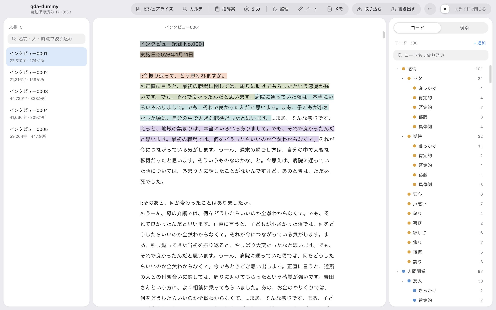
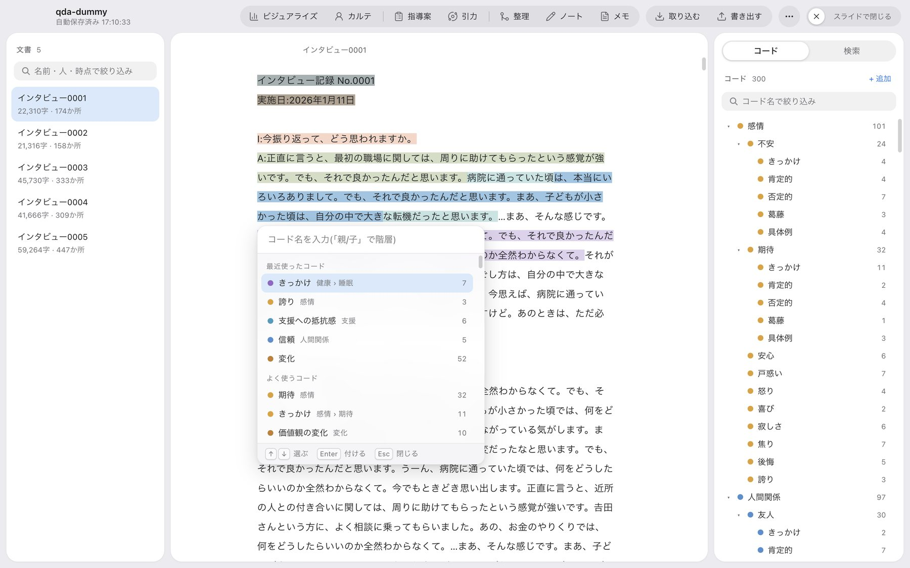
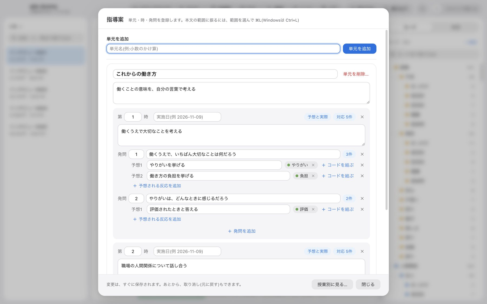
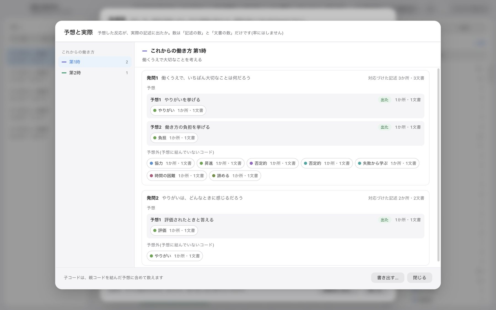
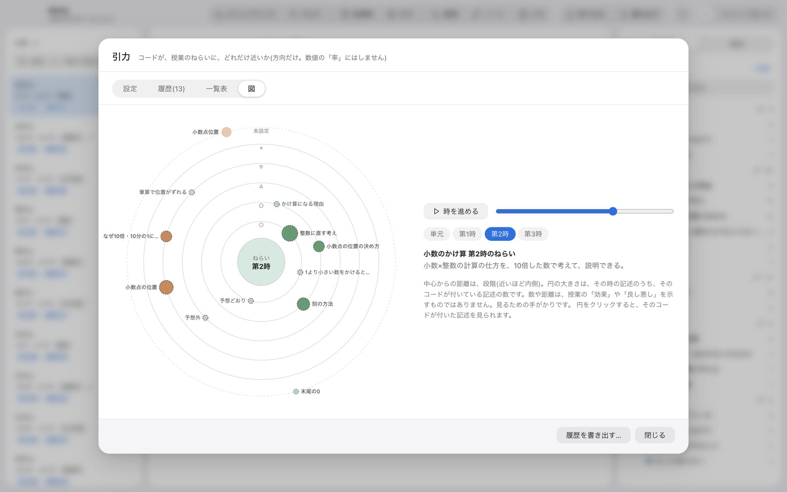
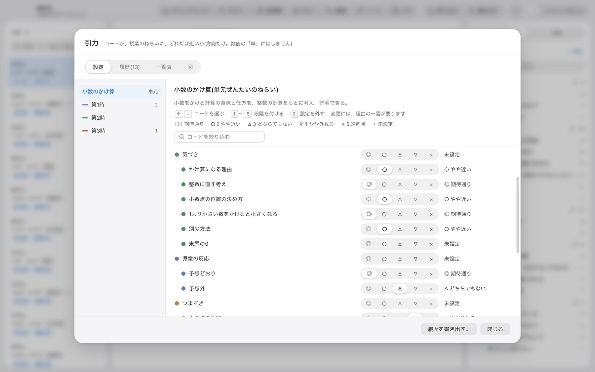
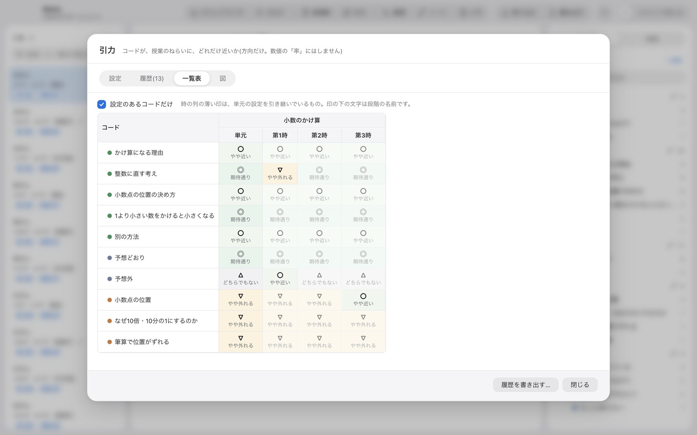
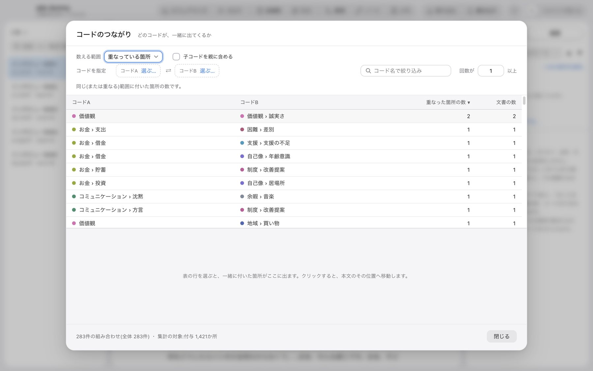

Stück 03 · 配布中
110 QDA
コードを付ける手が止まらない。
逐語録や書き起こしに、すばやくコードを付けるための質的データ分析アプリ。指導案と記述を結び、ねらいとの距離まで見られるので、授業研究にもそのまま使えます。

キーボードだけで次々にコードを付ける。
本文を選ぶと、すぐ下に入力欄。打てば既存のコードが絞り込まれ、Enter で付きます。新しいコードもその場で作れて、「親/子」と打てば階層つき。
コードを付けても外しても、本文は書き換わらず、スクロール位置も選択範囲も動きません。読む流れを止めないための作りです。

指導案と記述を、そのまま結ぶ。
単元・時・発問を指導案として登録し、子どもの記述の範囲に「第2時 発問3」を、コードと同じ手つきで振っていきます。本文を選んで ⌘L、「2-3」と打って Enter。1人の文書に何時間分が入っていてもかまいません。
- 時ごとの色の下線コードの色とは別の場所に引くので、混ざりません。
- 授業別に見る時や発問を選ぶと、全員のその時の記述が、付いたコードといっしょに並びます。
- そのまま書き出す授業別の記述の一覧を、Excel・CSV に。

予想した反応は、本当に出たか。
発問ごとに「予想される反応」を書き、それに当たるコードを結んでおきます。分析が進むと、予想ごとに「出た/出なかった」と記述の数が並び、どの予想にも結ばれていないコードが「予想外」として浮かびます。
出なかった予想も 0 として残るので、授業のあとの振り返りがそのまま表になります。

ねらいに、どれだけ近づいたか。
「引力」は、それぞれのコードが授業のねらいにどれだけ近いかを、5段階で置いていく機能です。◎ 期待通り・○ やや近い・△ どちらでもない・▽ やや外れる・× 逆向き。キーの 1〜5 で付けるか、マウスで台座の上の白い板をすべらせて選びます。
- ねらいを中心にした図近いコードほど中心に寄り、円の大きさは記述の数。「時を進める」と、円がばねのように動いて、授業ごとの変化が見えます。
- 予想外でも、ねらいに沿う「予想と実際」の表にも段階が出て、予想外だがねらいに沿う反応を見つけられます。
- 考えの跡が残る段階を変えるときは理由をひとこと。変更は追記だけの履歴に残り、あとから見直せます。
距離や大きさは、授業の良し悪しを示すものではなく、見るための手がかりです。

画面



できること
キーボードでコード付け
選択 → 入力 → Enter。最近使ったコード・よく使うコードがすぐ出ます。
個別カルテ
一人ひとりのコードの経過を、時点ごと・質問項目ごとに。抽出児などのタグも付けられます。
コードのつながり
どのコードが一緒に出てくるかを、付けたコードだけで数えます。
コードの整理
階層・移動・統合・カテゴリー。統合の影響は、実行する前に数字で出ます。
取り込みと書き出し
Word・Excel(回答者×設問)を取り込み、Excel・CSV・色付きのWordに書き出せます。
10分のチュートリアル
練習用データで、操作する場所を案内しながら一通り試せます。
あなたのパソコンの中だけで。
アプリはインターネットに一切接続しません。データは、あなたが選んだ場所の .qda ファイル1つに保存されます。自動保存・自動バックアップに加えて、開くときのパスワードもかけられます。
- PlatformMac / Windows
- Network通信しません